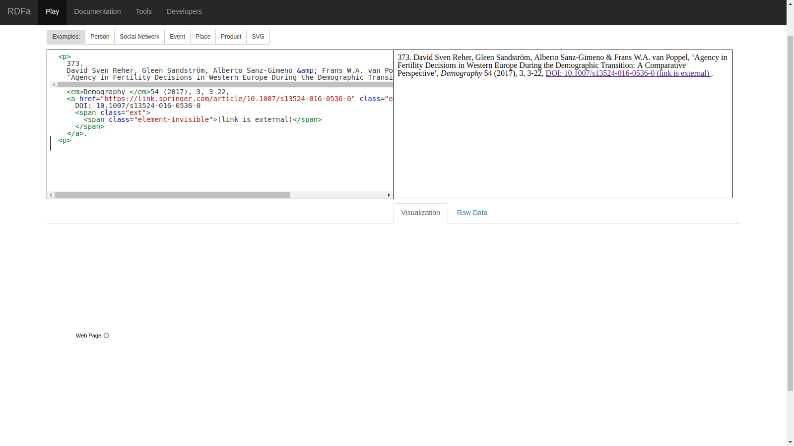
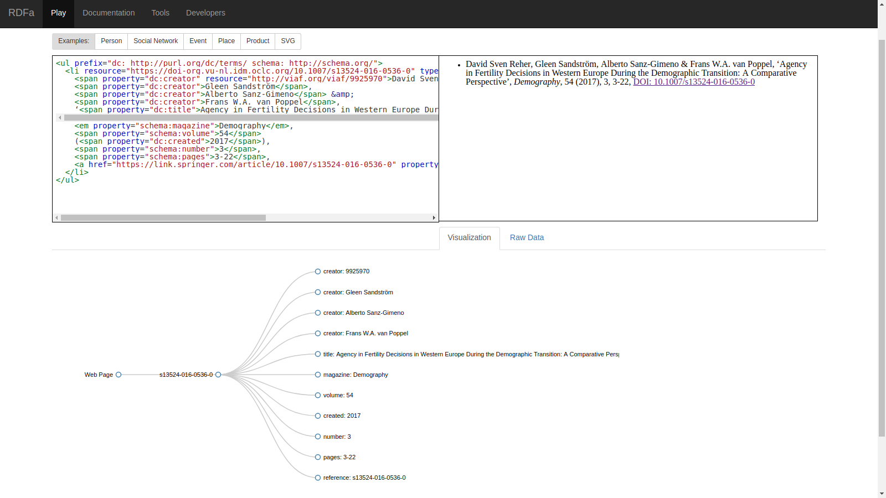

Voorbeeld van het gebruik van HTML5+RDFa
Table of Contents
Op dit moment bezit het IISG een grote hoeveelheid data/informatie die in HTML pagina's is opgeslagen. Er niks mis is met het opslaan van data in HTML pagina's. Een database biedt meer functionaliteit, maar is ook lastiger in het gebruik en kostbaarder qua onderhoud. Daarnaast kan data dit in HTML is opgeslagen direct getoond worden in een web browser. HTML is met name geschikt voor kleinere hoeveerheden data die middels een narratieve structuur verbonden zijn.
1 Een voorbeeld van IISG data in HTML
Gegeven dat het prima is om data in HTML op te slaan, is het wel zo dat de huidige HTML data die het IISG opslaat geen gebruik maakt van de laatste standaarden voor het structureren van HTML content. Laten we een voorbeeld van een HTML record uit de HSN collecties nemen:
<p> 373. David Sven Reher, Gleen Sandström, Alberto Sanz-Gimeno & Frans W.A. van Poppel, ‘Agency in Fertility Decisions in Western Europe During the Demographic Transition: A Comparative Perspective’, <em>Demography </em>54 (2017), 3, 3-22, <a href="https://link.springer.com/article/10.1007/s13524-016-0536-0" class="ext"> DOI: 10.1007/s13524-016-0536-0 <span class="ext"> <span class="element-invisible">(link is external)</span> </span> </a>. <p>
De bovenstaande HTML snippet is niet semantisch interpreteerbaar: het
is voor een machine niet duidelijk dat 373. niet bij het record
hoort maar het item nummer weergeeft.
Het is voor een machine niet makkelijk om de auteurs in dit soort HTML content te identificeren. De auteursnamen lijken hier onderscheiden te worden door comma's, maar de laatste auteur wordt met een ampersand onderscheiden. Merk op dat deze notatie [1] net zo gebruikelijk is als notatie [2], waarbij de betekens van de comma en de ampersand heel anders is:
[1] David Sven Reher, Gleen Sandström, Alberto Sanz-Gimeno & Frans W.A. van Poppel [2] Sven Reher, David & Sandström, Gleen & Sanz-Gimeno, Alberto & W.A. van Poppel, Frans
Daarnaast weet een machine niet wat de verschillende getallen (54, 3, 22) aanduiden. Als we deze HTML snippet aan een data processor geven, vindt deze de volgende content (d.w.z. bijna niets):

Figure 1: Machine leesbare content in het huidige HTML snippet (= bijna niets).
2 Hetzelfde voorbeeld in HTML5+RDFa
Als we gebruik maken van HTML5 en [RDFa](https://www.w3.org/TR/rdfa-primer/) standaarden, kunnen we dezelfde data als volgt opschrijven.
We gebruiken de ul en li tags om een enumeratie aan te duiden.
Het nummer in de enumeratie (373) laten we door CSS in de browser
tonen. Dit scheelt een hoop werk wanneer men later records
verwijdert, toegevoegd, of herordend.
In dit voorbeel definiëren we de afkortingen (prefix) op het ul
element. Normaal gesproken zou dit op het body element worden
gedaan. In dit voorbeeld gebruiken we Dublin Core (dc) en
Schema.org (schema).
In de li tag geven we de identifier van het werk dat beschreven
wordt middels de resource eigenschap.
De auteurs komen in VIAF voor. Voor de eerste auteur voegen we zijn
VIAF identifier toe middels de resource property. Het werk en de
auteur zijn gerelateerd middels de Dublin Core ‘creator’ eigenschap
(dc:creator). Etc.
<ul prefix="dc: http://purl.org/dc/terms/ schema: http://schema.org/"> <li resource="https://doi-org.vu-nl.idm.oclc.org/10.1007/s13524-016-0536-0" typeof="Article"> <span property="dc:creator" resource="http://viaf.org/viaf/9925970">David Sven Reher</span>, <span property="dc:creator">Gleen Sandström</span>, <span property="dc:creator">Alberto Sanz-Gimeno</span> & <span property="dc:creator">Frans W.A. van Poppel</span>, ‘<span property="dc:title">Agency in Fertility Decisions in Western Europe During the Demographic Transition: A Comparative Perspective</span>’, <em property="schema:magazine">Demography</em>, <span property="schema:volume">54</span> (<span property="dc:created">2017</span>), <span property="schema:number">3</span>, <span property="schema:pages">3-22</span>, <a href="https://link.springer.com/article/10.1007/s13524-016-0536-0" property="schema:reference">DOI: 10.1007/s13524-016-0536-0</a> </li> </ul>

Figure 2: Machine leesbare content in het HTML5+RDFa snippet.
Als we bovenstaande HTML snippet in Triply inlezen krijgen we de volgende RDF data:
@prefix dc: <http://purl.org/dc/terms/> . @prefix schema: <http://schema.org/> . <https://doi-org.vu-nl.idm.oclc.org/10.1007/s13524-016-0536-0> dc:creator <http://viaf.org/viaf/9925970>; dc:creator "Gleen Sandström"; dc:creator "Alberto Sanz-Gimeno"; dc:creator "Frans W.A. van Poppel"; dc:title "Agency in Fertility Decisions in Western Europe During the Demographic Transition: A Comparative Perspective"; schema:magazine "Demography"; schema:volume "54"; dc:created "2017"; schema:number "3"; schema:pages "3-22"; schema:reference <https://link.springer.com/article/10.1007/s13524-016-0536-0> .
Merk op dat de data er nog steeds precies hetzelfde uitzien in een web browser, maar dat het nu ook mogelijk is om dezelfde data schemantisch te interpreteren in termen van Dublin Core, Schema.org en VIAF.